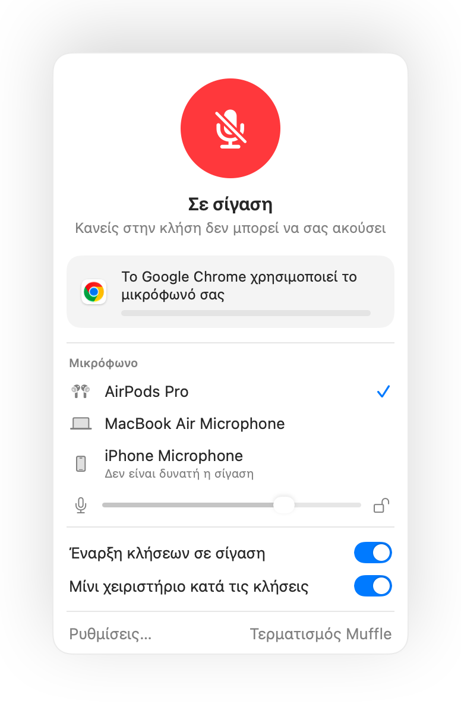

Δεν λειτουργεί η σίγαση των AirPods στο Mac σας; Αυτή είναι η λύση
Το macOS σάς επιτρέπει να θέσετε σε σίγαση μια κλήση πατώντας το στέλεχος των AirPods σας, αλλά μόνο αν η εφαρμογή της κλήσης το υποστηρίζει. Πολλές δεν το υποστηρίζουν, συμπεριλαμβανομένου του Chrome και των κλήσεων web μέσα σε αυτό. Πατάτε, ακούτε έναν σύντομο ήχο σφάλματος, βλέπετε το μήνυμα «Cannot Control Mic», και οι άλλοι στην κλήση συνεχίζουν να σας ακούνε.
Το Muffle προσθέτει αυτή την υποστήριξη σε κάθε app. Λαμβάνει το πάτημα, θέτει σε σίγαση το μικρόφωνο του Mac σας και αναπαράγει τον κανονικό ήχο σίγασης.
Κάντε το πάτημα των AirPods να λειτουργεί για σίγαση σε κάθε app
- 1
Εγκαταστήστε το Muffle και επιτρέψτε την πρόσβαση στο μικρόφωνο. Το macOS στέλνει το πάτημα μόνο σε εφαρμογές που μπορούν να χρησιμοποιήσουν το μικρόφωνο.
- 2
Ελέγξτε ότι η επιλογή «Σίγαση και κατάργηση σίγασης με πάτημα των AirPods» είναι ενεργοποιημένη στις Ρυθμίσεις Muffle.
- 3
Συνδεθείτε σε μια κλήση. Το πάτημα κάνει σίγαση μόνο όσο μια app χρησιμοποιεί το μικρόφωνο.
- 4
Πατήστε το στέλεχος μία φορά για σίγαση και ξανά για κατάργηση σίγασης.

- Εκτός κλήσεων, το πάτημα συνεχίζει να ξεκινά και να παύει τη μουσική όπως συνήθως.
- Αν τα AirPods σας χρησιμοποιούν διαφορετικό πάτημα για τα χειριστήρια κλήσης, ελέγξτε τις ρυθμίσεις των AirPods σας στις Ρυθμίσεις Συστήματος.
Ερωτήσεις
Γιατί το Mac μου αναπαράγει έναν ήχο σφάλματος όταν πατάω τα AirPods μου;
Η εφαρμογή από την οποία καλείτε δεν υποστηρίζει το πάτημα σίγασης των AirPods, επομένως το macOS το απορρίπτει. Με το Muffle ενεργό, το πάτημα θέτει σε σίγαση το μικρόφωνό σας κανονικά.
Ποια AirPods υποστηρίζουν το πάτημα σίγασης;
Τα AirPods Pro, AirPods 3 και νεότερα μοντέλα, καθώς και τα AirPods Max, μαζί με μοντέλα Beats που διαθέτουν χειριστήρια κλήσης.